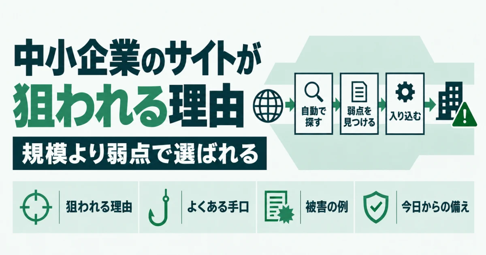
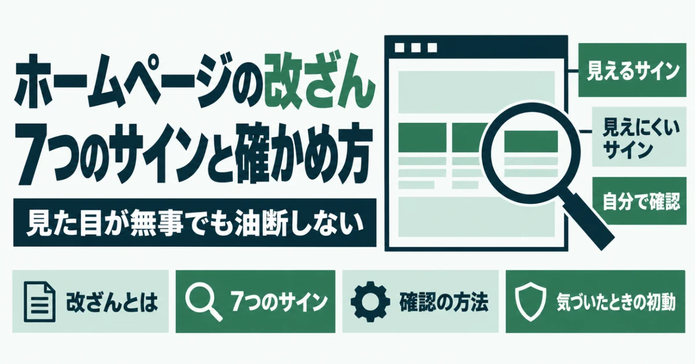
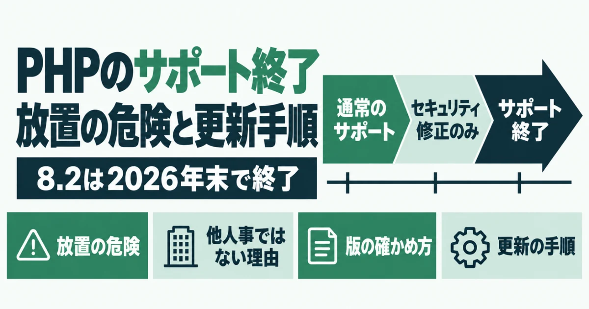
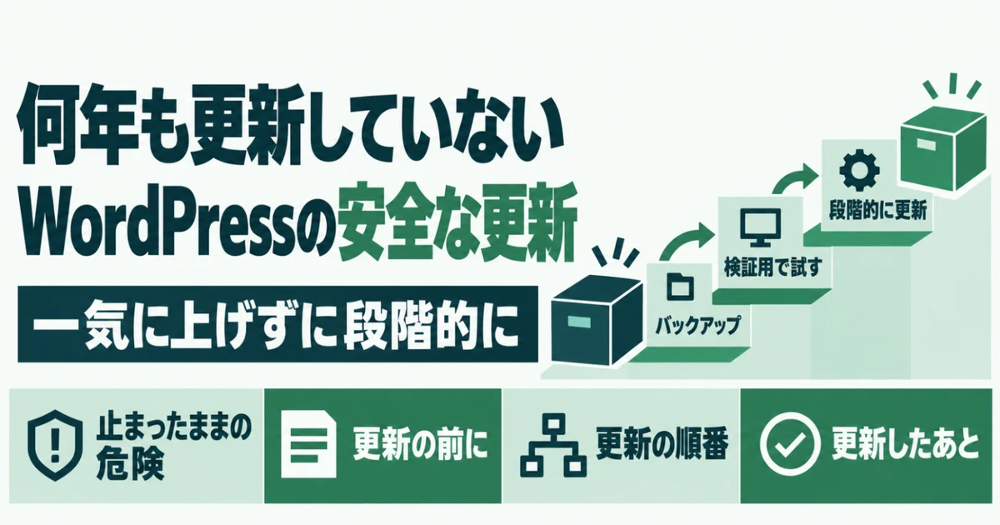
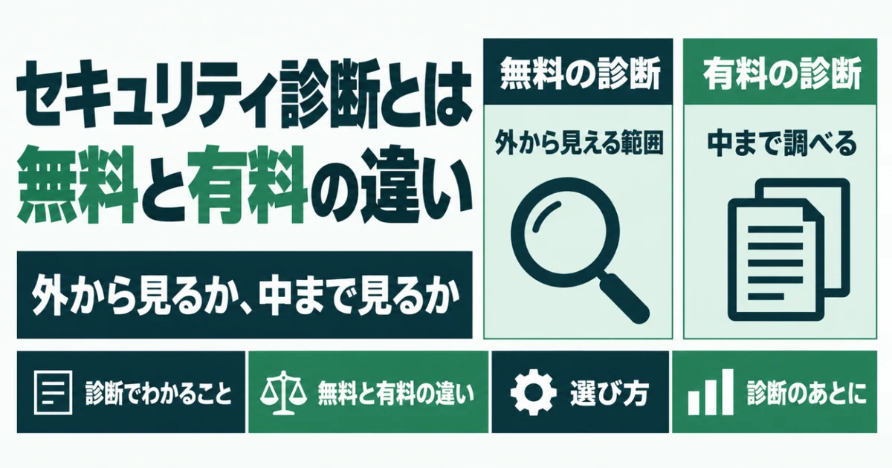

ブログ ホームページを守るための知識
PHPの更新、改ざんの見分け方、WordPressの設定まで。中小企業の担当者向けにまとめています。


ホームページ改ざんの復旧手順｜発見から再発防止まで

WordPressのユーザー名が漏洩する5つの経路と隠し方｜見えているかの確かめ方

中小企業のホームページが狙われる理由

「保護されていない通信」と表示される原因と直し方

WordPressのプラグインに脆弱性が見つかったときの対処法

エックスサーバーでPHPのバージョンを上げる手順と事前チェック

WordPressのバージョンを確認する方法（管理画面と外からの両方）

ホームページが改ざんされたかも？確認したい7つのサインと自分でできる確かめ方

PHPのサポート終了とは？放置の危険と確認・更新の手順｜8.2は2026年末で終了

WordPressを何年も更新していないときの安全な更新手順

ホームページのセキュリティ診断とは？無料と有料の違い
まずは、今の状態を知るところから。
URLを入れるだけで、数十秒で判定が出ます。登録はいりません。